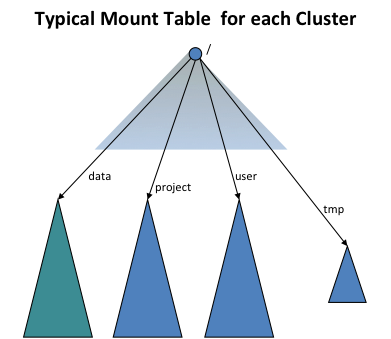

The View File System (ViewFs) provides a way to manage multiple Hadoop file system namespaces (or namespace volumes). It is particularly useful for clusters having multiple namenodes, and hence multiple namespaces, in HDFS Federation. ViewFs is analogous to client side mount tables in some Unix/Linux systems. ViewFs can be used to create personalized namespace views and also per-cluster common views.
This guide is presented in the context of Hadoop systems that have several clusters, each cluster may be federated into multiple namespaces. It also describes how to use ViewFs in federated HDFS to provide a per-cluster global namespace so that applications can operate in a way similar to the pre-federation world.
In the old world prior to HDFS Federation, a cluster has a single namenode which provides a single file system namespace for that cluster. Suppose there are multiple clusters. The file system namespaces of each cluster are completely independent and disjoint. Furthermore, physical storage is NOT shared across clusters (i.e. the Datanodes are not shared across clusters.)
The core-site.xml of each cluster has a configuration property that sets the default file system to the namenode of that cluster:
<property> <name>fs.default.name</name> <value>hdfs://namenodeOfClusterX:port</value> </property>
Such a configuration property allows one to use slash-relative names to resolve paths relative to the cluster namenode. For example, the path /foo/bar is referring to hdfs://namenodeOfClusterX:port/foo/bar using the above configuration.
This configuration property is set on each gateway on the clusters and also on key services of that cluster such the JobTracker and Oozie.
Hence on Cluster X where the core-site.xml is set as above, the typical pathnames are
/foo/bar
hdfs://namenodeOfClusterX:port/foo/bar
hdfs://namenodeOfClusterY:port/foo/bar
distcp hdfs://namenodeClusterY:port/pathSrc hdfs://namenodeClusterZ:port/pathDest
webhdfs://namenodeClusterX:http_port/foo/bar and hftp://namenodeClusterX:http_port/foo/bar
http://namenodeClusterX:http_port/webhdfs/v1/foo/bar and http://proxyClusterX:http_port/foo/bar
Suppose there are multiple clusters. Each cluster has one or more namenodes. Each namenode has its own namespace. A namenode belongs to one and only one cluster. The namenodes in the same cluster share the physical storage of that cluster. The namespaces across clusters are independent as before.
Operations decide what is stored on each namenode within a cluster based on the storage needs. For example, they may put all the user data (/user/<username>) in one namenode, all the feed-data (/data) in another namenode, all the projects (/projects) in yet another namenode, etc.
In order to provide transparency with the old world, the ViewFs file system (i.e. client-side mount table) is used to create each cluster an independent cluster namespace view, which is similar to the namespace in the old world. The client-side mount tables like the Unix mount tables and they mount the new namespace volumes using the old naming convention. The following figure shows a mount table mounting four namespace volumes /user, /data, /projects, and /tmp:

ViewFs implements the Hadoop file system interface just like HDFS and the local file system. It is a trivial file system in the sense that it only allows linking to other file systems. Because ViewFs implements the Hadoop file system interface, it works transparently Hadoop tools. For example, all the shell commands work with ViewFs as with HDFS and local file system.
The mount points of a mount table are specified in the standard Hadoop configuration files. In the configuration of each cluster, the default file system is set to the mount table for that cluster as shown below (compare it with the configuration in Single Namenode Clusters).
<property> <name>fs.defaultFS</name> <value>viewfs://clusterX</value> </property>
The authority following the viewfs:// scheme in the URI is the mount table name. It is recommanded that the mount table of a cluster should be named by the cluster name. Then Hadoop system will look for a mount table with the name “clusterX” in the Hadoop configuration files. Operations arrange all gateways and service machines to contain the mount tables for ALL clusters such that, for each cluster, the default file system is set to the ViewFs mount table for that cluster as described above.
Hence on Cluster X, where the core-site.xml is set to make the default fs to use the mount table of that cluster, the typical pathnames are
/foo/bar
viewfs://clusterX/foo/bar
viewfs://clusterY/foo/bar
distcp viewfs://clusterY/pathSrc viewfs://clusterZ/pathDest
viewfs://clusterX-webhdfs/foo/bar and viewfs://clusterX-hftp/foo/bar
http://namenodeClusterX:http_port/webhdfs/v1/foo/bar and http://proxyClusterX:http_port/foo/bar
When one is within a cluster, it is recommended to use the pathname of type (1) above instead of a fully qualified URI like (2). Futher, applications should not use the knowledge of the mount points and use a path like hdfs://namenodeContainingUserDirs:port/joe/foo/bar to refer to a file in a particular namenode. One should use /user/joe/foo/bar instead.
Recall that one cannot rename files or directories across namenodes or clusters in the old world. The same is true in the new world but with an additional twist. For example, in the old world one can perform the commend below.
rename /user/joe/myStuff /data/foo/bar
This will NOT work in the new world if /user and /data are actually stored on different namenodes within a cluster.
As I move from non-federated world to the federated world, I will have to keep track of namenodes for different volumes; how do I do that?
No, you won’t. See the examples above – you are either using a relative name and taking advantage of the default file system, or changing your path from hdfs://namenodeCLusterX/foo/bar to viewfs://clusterX/foo/bar.
What happens of Operations move some files from one namenode to another namenode within a cluster?
Operations may move files from one namenode to another in order to deal with storage capacity issues. They will do this in a way to avoid applications from breaking. Let’s take some examples.
Is the mount table in each core-site.xml or in a separate file of its own?
The plan is to keep the mount tables in separate files and have the core-site.xml xincluding it. While one can keep these files on each machine locally, it is better to use HTTP to access it from a central location.
Should the configuration have the mount table definitions for only one cluster or all clusters?
The configuration should have the mount definitions for all clusters since one needs to have access to data in other clusters such as with distcp.
When is the mount table actually read given that Operations may change a mount table over time?
The mount table is read when the job is submitted to the cluster. The XInclude in core-site.xml is expanded at job submission time. This means that if the mount table are changed then the jobs need to be resubmitted. Due to this reason, we want to implement merge-mount which will greatly reduce the need to change mount tables. Further, we would like to read the mount tables via another mechanism that is initialized at job start time in the future.
Will JobTracker (or Yarn’s Resource Manager) itself use the ViewFs?
No, it does not need to. Neither does the NodeManager.
Does ViewFs allow only mounts at the top level?
No; it is more general. For example, one can mount /user/joe and /user/jane. In this case, an internal read-only directory is created for /user in the mount table. All operations on /user are valid except that /user is read-only.
An application works across the clusters and needs to persistently store file paths. Which paths should it store?
You should store viewfs://cluster/path type path names, the same as it uses when running applications. This insulates you from movement of data within namenodes inside a cluster as long as operations do the moves in a transparent fashion. It does not insulate you if data gets moved from one cluster to another; the older (pre-federation) world did not protect you form such data movements across clusters anyway.
What about delegation tokens?
Delegation tokens for the cluster to which you are submitting the job (including all mounted volumes for that cluster’s mount table), and for input and output paths to your map-reduce job (including all volumes mounted via mount tables for the specified input and output paths) are all handled automatically. In addition, there is a way to add additional delegation tokens to the base cluster configuration for special circumstances.
Generally, users do not have to define mount tables or the core-site.xml to use the mount table. This is done by operations and the correct configuration is set on the right gateway machines as is done for core-site.xml today.
The mount tables can be described in core-site.xml but it is better to use indirection in core-site.xml to reference a separate configuration file, say mountTable.xml. Add the following configuration element to core-site.xml for referencing mountTable.xml:
<configuration xmlns:xi="http://www.w3.org/2001/XInclude"> <xi:include href="mountTable.xml" /> </configuration>
In the file mountTable.xml, there is a definition of the mount table “ClusterX” for the hypothetical cluster that is a federation of the three namespace volumes managed by the three namenodes
Here /home and /tmp are in the namespace managed by namenode nn1-clusterx.example.com:8020, and projects /foo and /bar are hosted on the other namenodes of the federated cluster. The home directory base path is set to /home so that each user can access its home directory using the getHomeDirectory() method defined in FileSystem/FileContext.
<configuration>
<property>
<name>fs.viewfs.mounttable.ClusterX.homedir</name>
<value>/home</value>
</property>
<property>
<name>fs.viewfs.mounttable.ClusterX.link./home</name>
<value>hdfs://nn1-clusterx.example.com:8020/home</value>
</property>
<property>
<name>fs.viewfs.mounttable.ClusterX.link./tmp</name>
<value>hdfs://nn1-clusterx.example.com:8020/tmp</value>
</property>
<property>
<name>fs.viewfs.mounttable.ClusterX.link./projects/foo</name>
<value>hdfs://nn2-clusterx.example.com:8020/projects/foo</value>
</property>
<property>
<name>fs.viewfs.mounttable.ClusterX.link./projects/bar</name>
<value>hdfs://nn3-clusterx.example.com:8020/projects/bar</value>
</property>
</configuration>